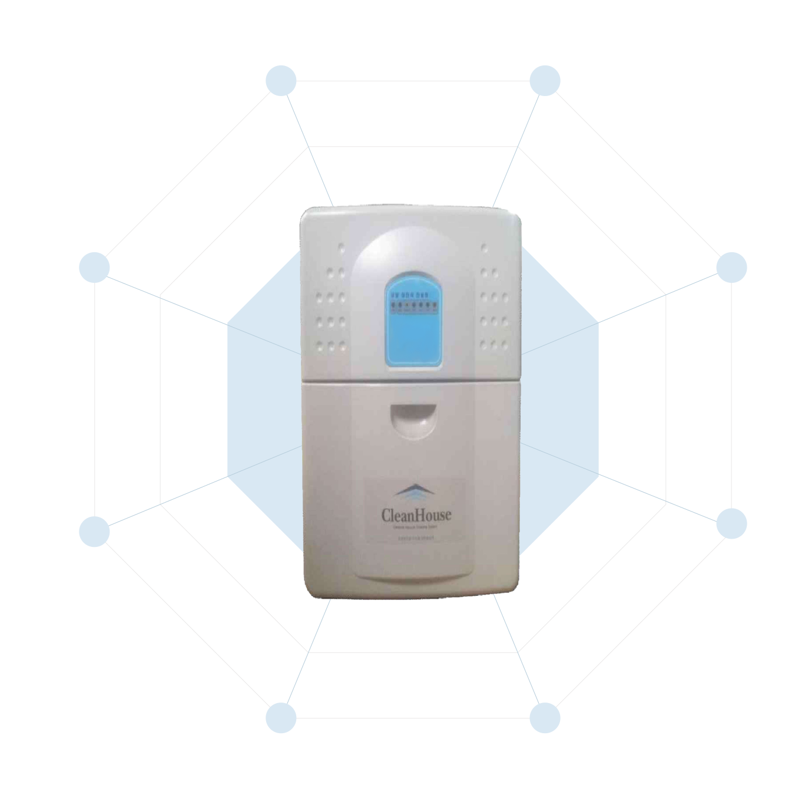

중앙집중식 청소기
- 제품소개
중앙집중식 청소기
제품 구성도
제품 장점
제품 사용방법
- 제품 종류 및 사양
전열교환기
- 제품소개
전열교환기
장비구성 및 유지관리
- 제품 종류 및 사양
소모품
- 중앙집중식 청소기
TOOL SET(악세서리)
배관자재
- 전열교환기
회사소개
중앙집중식 청소기
- 제품소개
중앙집중식 청소기
제품 구성도
제품 장점
제품 사용방법
- 제품 종류 및 사양
전열교환기
- 제품소개
전열교환기
장비구성 및 유지관리
- 제품 종류 및 사양
소모품
- 중앙집중식 청소기
TOOL SET(악세서리)
배관자재
- 전열교환기
회사소개
제품소개
중앙집중식 청소기의 원리, 구성, 사용, 장점을 한눈에
중앙집중식 청소기
제품 구성도
제품 장점
제품 사용방법

강력한 흡입력
강력한 흡입력으로
미세먼지, 세균 제거
조용한 청소
저소음 설계로 청소
중에도 조용함 유지
경제성
연 1~2회 집진통
비우는 간편함
간단하고
편리한 청소
호스만 연결해
손쉽게 청소
깨끗하고 쾌적한
실내유지
먼지, 악취를 실외로 배출,
실내 항상 쾌적
다양한 청소도구
바닥, 가구, 틈새까지
다양한 툴 제공
각종 안전장치
자동 OFF,
과부하 방지 등
무선 원격조정
무선 리모컨으로
간편 작동